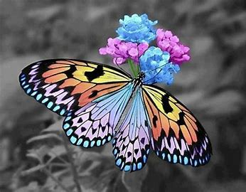

Art, like beauty is in the eye or ear of the beholder.
I believe we all have a story to tell, whether it be music,
painting, dancing, literature or even a lifestyle. We all are truly gifted,
and being unique individuals that art form comes in many forms.
I sometimes feel connected to the artist when admiring their craft.
I once saw a young lady dancing(with such grace and poise),
but her eyes told a different story, a story of fear, hate and loneliness.
I had to ask, and she eplained how she started dancing as a way to escape an abusive relationship.
The relationship is long over but the true essence of her art is what sets her free.
It saddens me to know that many people will live their whole lives not knowing their true talent. A caterpillar would die happy if it never saw a butterfly. Stop crawling on the ground and transform yourself, spread your wings and be free.
 LINK